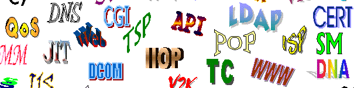

Выполнил: Козлов Сергей Игоревич
Группа: 568402
Стихотворение
Мириады маленьких делПьют по капле гаснущий день.
А дела большие сушит жажда.
Оставляя всё на "потом".
Прозреваем задним числом.
Только день не повторится дважды.
И. Тальков
Не позволяй душе лениться!
Не позволяй душе лениться,
Чтоб воду в ступе не толочь,
Душа обязана трудиться
И день и ночь, и день и ночь!
Гони её от дома к дому,
Тащи с этапа на этап,
По пустырю, по бурелому,
Через сугроб, через ухаб!
Не разрешай ей спать в постели,
При свете утренней звезды.
Держи лентяйку в черном теле
И не спускай с нее узды!
И. Заболоцкий
Silence is golden

Структура проекта
- index.html
- img
- css
- js
- fonts
Ссылки

- Внутренняя оптимизация сайта
- C для сайта
- Перевод текста онлайн
- Создание сайта с нуля
- Безопасные семейства шрифтов
Генераторы
- Цвета
- ColorMixers
- Color Tester
- Color Palette
- Фавиконы
- Фоны
- BgPatterns
- Patternify
- Изображения
- Cool Text
- Flaming Text

Нет, не мало времени мы имеем, а много теряем. Жизнь дана нам достаточно долгая, и её с избытком хватит на свершение величайших дел, если распределить её с умом. Но если она не направляется доброю целью, если наша расточительность и небрежность позволяют ей утекать у нас меж пальцев, то когда пробьёт наш последний час, мы с удивлением обнаруживаем, что жизнь, течения которой мы не заметили, истекла.
Сенека
© www.bsuir.by/ru/kaf-ikt
Код программы
for (let i = 1; i <= 10; i++) {
{
cout< if (i == 5)
break;
}
© www.bsuir.by/ru/kaf-ikt
Волшебные формулы
(x+y)³=x³+3x²y+3xy²+y²Δx₁+Δx₂+...+Δxₙ=ΣΔxₖ
Если ∀ x ∈ R такого, что |x| ≤ 1 ∃y ≥ 1, то ξ < ∞
© www.bsuir.by/ru/kaf-ikt
"Странные" буквы

В современном русском языке не склоняются:
- Инициальные аббревиатуры (составленные из первых букв слов), кончающиеся гласным, например: БГУИР, ОАО;
- Заимствованные аббревиатуры, кончающиеся твёрдым согласным, например: MAN.
© www.bsuir.by
Химические элементы
| Номер | Название | Символ | Год | Статья |
|---|---|---|---|---|
| 1 | Водород | H | 1766 | |
| 2 | Гелий | He | 1895 | |
| 3 | Литий | Li | 1808 |
@www.bsuir.by
Карта сокровищ

Пройдено:
www.bsuir.by